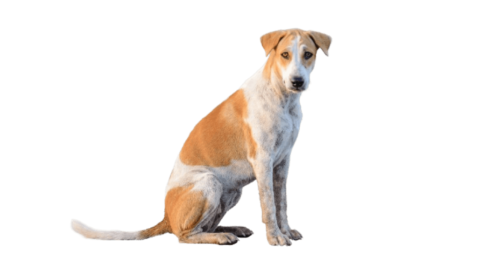

Венгерская борзая — охотничья собака из породы борзых. У породы мускулистый и крепкий торс с подтянутым животом, клиновидная голова с широким лбом, тёмными небольшими глазами и короткой для борзых мордой. Уши венгерских борзых большие, толстые и в форме розы, они высоко посажены и достигают шеи.
Также у этой породы сильный, толстый и слегка сужающийся к концу хвост. Его нижняя сторона покрыта жёсткой шерстью. Лапы собаки сильные, большие, чуть удлинённые, с крепкими подушечками и когтями.
Шерсть венгерских борзых короткая, плотная, довольно жёсткая, гладко прилегает к толстой коже. Зимой может вырастать плотный подшёрсток. Стандарт допускает все характерные для борзых окрасы.
На картинке пример со щенком венгерской борзой с двухцветным окрасом — белым и светло-коричневым. Верхняя часть головы с ушами, часть спины и задние лапы собаки коричневые, а всё остальное тело белое.
